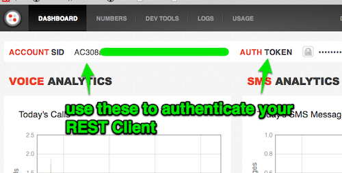

The Twilio platform makes adding voice, SMS, and VoIP capabilities to your applications ridiculously simple. This helper library for node aims to make it even easier. This documentation page code and format is adapted from the awesome/utilitary format used to document the popular Backbone and Underscore JavaScript frameworks, created by Jeremy Ashkenas and other open source contributors.
The twilio-node project is hosted on GitHub. You can report bugs and discuss features on the issues page, on Freenode in the #twilio channel, or send tweets to @kevinwhinnery.
twilio-node is available as an npm package. Install the latest version with:
npm install twilio
To begin using Twilio to make voice calls, send SMS, and create VoIP clients, you first need to sign up for an account. After signing up, you will be able to access an account SID and auth token which will be used to authenticate requests to the Twilio back end. This information can be found on your dashboard:

With these credentials, you can begin to use this node module, as in the following example:
//require the Twilio module
var twilio = require('twilio');
//Create a REST client to make authenticated requests to Twilio
var client = new twilio.RestClient('ACCOUNT_SID', 'AUTH_TOKEN');
//Send an SMS text message
client.sms({
to:'+16515556677', // Any number Twilio can deliver to
from: '+14506667788', // A number you bought from Twilio and can use for outbound communication
body: 'word to your mother.' // body of the SMS message
}, function(err, responseData, nodeResponse) { //this function is executed when a response is received from Twilio
if (!err) { // "err" is an error received during the request, if any
// "responseData" is a JavaScript object containing data received from Twilio.
// A sample response from sending an SMS message is here (click "JSON" to see how the data appears in JavaScript):
// http://www.twilio.com/docs/api/rest/sending-sms#example-1
console.log(responseData.from); // outputs "+14506667788"
console.log(responseData.body); // outputs "word to your mother."
// you can also access the raw node.js http.ClientResponse object,
// which is "nodeResponse", the third argument to this callback:
// http://nodejs.org/api/http.html#http_http_clientresponse
console.log(nodeResponse.statusCode); //outputs "200" if the request was successful
}
});
//Place a phone call, and respond with TwiML instructions from the given URL
client.call({
to:'+16515556677', // Any number Twilio can call
from: '+14506667788', // A number you bought from Twilio and can use for outbound communication
url: 'http://www.example.com/twiml.php' // A URL that produces an XML document (TwiML) which contains instructions for the call
}, function(err, responseData, nodeResponse) {
//executed when the call has been initiated.
});
More examples can be found in the "spec" directory of this project on GitHub, as Jasmine unit tests.
RestClient exposes the REST API of Twilio, but takes care of content negotiation and HTTP requests for you. The client object is intended to mirror the API pretty directly, so the existing REST API reference will be a good source of information on what each function does. The major resources and available methods for the REST API will be described here, along with shorthand where it exists.
How This API is Structured
The RestClient API is intended to be self-documenting, mapping very closely to the actual
REST API. Once you have created a client object,
the object structure looks very much like the Twilio REST URIs, using a chained JavaScript syntax:
// Create a client:
var client = new twilio.RestClient('ACCOUNT_SID', 'AUTH_TOKEN');
//Get a list of calls made by this account
// GET /2010-04-01/Accounts/ACCOUNT_SID/Calls
client.account.calls.get(function(err, responseData) {
//work with call list in responseData
});
//Get a list of calls made by this account, from this phone number
// GET /2010-04-01/Accounts/ACCOUNT_SID/Calls?From=+16513334455
client.account.calls.get({
from:'+16513334455'
}, function(err, responseData) {
//work with call list in responseData
});
//Get data for a specific call
// GET /2010-04-01/Accounts/ACCOUNT_SID/Calls/abc123...
client.account.calls('abc123...').get(function(err, responseData) {
//work with responseData
});
//Get data for a specific call, for a specific account
// GET /2010-04-01/Accounts/AC.../Calls/abc123...
client.accounts('AC...').calls('abc123...').get(function(err, responseData) {
//work with responseData
});
// Create (send) an SMS message
// POST /2010-04-01/Accounts/ACCOUNT_SID/SMS/Messages
// (client.account.sms.messages.create is aliased to the "post" function for this resource)
client.account.sms.messages.post({
to:'+16515559999',
from:'+14503334455',
body:'word to your mother.'
}, function(err, responseData) {
//work with responseData
});
// Delete a TwiML application
// DELETE /2010-04-01/Accounts/ACCOUNT_SID/Applications/APP...
client.account.applications('APP...').delete(function(err, responseData, nodeResponse) {
//delete sends back a 204 on complete, with no error
assert(!err);
assert(nodeResponse.statusCode === 204);
});
twilio.RestClienttwilio.RestClient(accountSid, authToken[, clientOptions])
Creates a new REST client object, using the given account SID and auth token, as available on your
Twilio dashboard when
create an account and log in.
These credentials are used to authorize your requests
to the Twilio back end. REST clients can be created for
subaccounts,
but requests will then only be authorized to access resources associated with that subaccount.
Example:
var twilio = require('twilio');
var client = new twilio.RestClient('AC...', 'xcD1...');
requestclient.request(requestOptions[, callback])
Makes an authenticated HTTP request against the Twilio back end. Typically, an end user
WILL NOT use this function, but rather one of the resource-specific functions or
shorthand functions.
Example:
var twilio = require('twilio');
var client = new twilio.RestClient('ACCOUNT_SID', 'AUTH_TOKEN');
client.request({
url:'/Accounts',
method:'GET'
}, function (error, responseData, nodeClientResponse) {
//work with response data
});
The following is a listing of REST resources surfaced in the RestClient. Supported list and instance functions are shown here, which should map 1:1 to the supported HTTP methods in the Twilio REST API (plus "create" and "update" aliases as relevant).
Resource Request Argument Format
All requests on Twilio REST resources follow the same format. The first argument to a RestClient
resource function is an optional JavaScript object hash of either query parameters for a GET or
POST/PUT parameters which will be form-encoded and sent along with the request. The second
(or maybe only) argument is a callback which receives the same arguments as the
callback function in the direct request API. An example of the request format is below.
Typically, Twilio REST APIs use upper-cased parameter names. When using this client module, you can omit the
upper-case first character if you wish.
Examples:
//A sample request with both POST parameters, and a callback
client.account.sms.messages.create({
//For an "update", "create", "post", or "put" request these properties are form-encoded and sent to Twilio:
to:'+16515554466',
from:'+14503334455',
body:'word to your mother.'
}, function(err, responseData, nodeResponse) { //this function is executed when a response is received from Twilio
if (!err) { // "err" is an error received during the request, if any
// "responseData" is a JavaScript object containing data received from Twilio.
// A sample response from sending an SMS message is here (click "JSON" to see how the data appears in JavaScript):
// http://www.twilio.com/docs/api/rest/sending-sms#example-1
console.log(responseData.from); // outputs "+14506667788"
console.log(responseData.body); // outputs "word to your mother."
// you can also access the raw node.js http.ClientResponse object,
// which is "nodeResponse", the third argument to this callback:
// http://nodejs.org/api/http.html#http_http_clientresponse
console.log(nodeResponse.statusCode); //outputs "200" if the request was successful
}
});
//A sample request with no parameters, just a callback
client.accounts('AC...').calls.get(function (err, responseData) {
//work with list of all calls for the given account
});
accountsclient.accounts([accountSid])
Alias: account
Accesses Account resources via the REST interface.
Instance Functions:
Examples:
//Get a list of subaccounts for this master account
client.accounts.get(function(err, data) {
//work with response data
});
//Create a subaccount
client.account.create({
friendlyName:'My Awesome Subaccount',
}, function(err, data) {
//work with response data
});
//Update details for a subaccount with SID 'AC...'
client.accounts('AC...').update({
friendlyName:'Something New'
}, function(err, data) {
//work with response data
});
availablePhoneNumbersclient.account.availablePhoneNumbers([IsoCountryCode]).[Local/TollFree]
Accesses AvailablePhoneNumbers
resources via the REST interface. Accessed primarily through Subresources for local and
tollFree numbers.
List Functions:
Examples:
//Get a list of available local numbers for Canada
client.account.availablePhoneNumbers('CA').local.get(function(err, data) {
//work with response data
});
//Get a list of available toll-free numbers for the United States
client.account.availablePhoneNumbers('US').tollFree.get(function(err, data) {
//work with response data
});
outgoingCallerIdsclient.account.outgoingCallerIds([callerIdSid])
Accesses OutgoingCallerIds
resources via the REST interface.
Instance Functions:
Examples:
//Get a list of outgoing caller IDs for the master account
client.account.outgoingCallerIds.get(function(err, data) {
//work with response data
});
//Update the friendly name for an outgoing caller ID (what is displayed to the callee)
client.account.outgoingCallerIds('callerIdSid').update({
friendlyName:'Not a telemarketer :D'
}, function(err, data) {
//work with response data
});
incomingPhoneNumbersclient.account.incomingPhoneNumbers([incomingNumberSid])
Accesses IncomingPhoneNumbers
resources via the REST interface. Includes subresources for local and toll free numbers.
Instance Functions:
Examples:
//Get a list of purchased (incoming) local numbers for an account, containing the digits 867
client.account.incomingPhoneNumbers.local.get({
phoneNumber:867
}, function(err, data) {
//work with response data
});
//Purchase a new phone number, which you looked up with the AvailablePhoneNumbers API
client.account.incomingPhoneNumbers.create({
phoneNumber:'+16512221111'
}, function(err, data) {
//work with response data
});
sms.messagesclient.account.sms.messages([messageSid])
Accesses SMS/Messages
resources via the REST interface.
Instance Functions:
Examples:
//Send (create) an SMS message with the master account, using shorthand
client.sms({
to:'+16512221111',
from:'+14502233344',
body:'word to your mother.'
}, function(err, data) {
//work with response data
});
//Get a list of SMS messages sent from a given subaccount
client.accounts('someAccountSid').sms.messages.get(function(err, data) {
//work with response data
});
sms.shortCodesclient.account.sms.shortCodes([messageSid])
Accesses SMS/ShortCodes
resources via the REST interface.
Instance Functions:
Examples:
//Get a list of SMS short codes used by a given account
client.accounts('someAccountSid').sms.shortCodes.get(function(err, data) {
//work with response data
});
applicationsclient.account.applications([applicationSid])
Accesses Applications
resources via the REST interface.
Instance Functions:
Examples:
//Get a list of TwiML applications for the client's default account
client.account.applications.get(function(err, data) {
//work with response data
});
//Update a TwiML application for the client's default account
client.account.applications('someSid').update({
friendlyName:'Something new',
VoiceUrl:'http://example.com/twiml.php'
}, function(err, data) {
//work with response data
});
connectAppsclient.account.connectApps([applicationSid])
Accesses Connect Apps
resources via the REST interface.
Instance Functions:
Examples:
//Get a list of Twilio Connect applications for the client's default account
client.account.connectApps.get(function(err, data) {
//work with response data
});
//Update a Connect application for the client's default account
client.account.connectApps('someSid').update({
friendlyName:'Something new'
}, function(err, data) {
//work with response data
});
Instance Functions:
Examples:
//Get a list of authorized Twilio Connect applications for the client's default account
client.account.authorizedConnectApps.get(function(err, data) {
//work with response data
});
//Get data about a specific authorized connect app
client.account.authorizedConnectApps('someSid').get(function(err, data) {
//work with response data
});
callsclient.account.calls([callSid])
Accesses Calls
resources via the REST interface.
Instance Functions:
Examples:
//Place a call
client.call({
to:'+16512223344',
from:'+14503334455',
url:'http://yourapp.com/twiml.jsp' // you're using JSP, right? :P
}, function(err, data) {
//work with response data
});
//Get a list of recordings for a specifc call
client.account.calls('someSid').recordings.get(function(err, data) {
//work with response data
});
conferencesclient.account.conferences([conferenceSid])
Accesses Conference
resources via the REST interface.
Instance Functions:
Examples:
//Get a list of in-progress conferences for the master account
client.account.conferences.get({
status:'in-progress'
}, function(err, data) {
//work with response data
});
queuesclient.account.queues([queueSid])
Accesses Queues
resources via the REST interface.
Instance Functions:
Examples:
//Get a list of queues for the master account
client.account.queues.get(function(err, data) {
//work with response data
});
//Create a call queue
client.account.queues.create({
friendlyName:'Barbie Queue',
maxSize:456
}, function(err, data) {
//work with response data
});
recordingsclient.account.recordings([recordingSid])
Accesses Recordings
resources via the REST interface.
Instance Functions:
Examples:
//Get a list of recordings for the master account, for dates after September 11, 2010
client.account.recordings.get({
'dateCreated>':'2010-09-11'
}, function(err, data) {
//work with response data
});
transcriptionsclient.account.transcriptions([transcriptionSid])
Accesses Transcriptions
resources via the REST interface.
Instance Functions:
Examples:
//Get a list of transcriptions, with paging info, sorted by date updated
client.account.transcriptions.get(function(err, data) {
//work with response data
if (!err) {
for (var i = 0, l = data.transcriptions.length; i < l; i++) {
console.log(data.transcriptions[i].transcription_text);
}
}
});
notificationsclient.account.notifications([notificationSid])
Accesses Notification
resources via the REST interface.
Instance Functions:
Examples:
//Get a list of notifications at the ERROR level, useful for debugging Twilio requests
client.account.notifications.get({
log:0
}, function(err, data) {
//work with response data
if (!err) {
for (var i = 0, l = data.notifications.length; i < l; i++) {
console.log(data.notifications[i].message_text);
}
}
});
usage.recordsclient.account.usage.records([recordSid])
Accesses Usage Records
resources via the REST interface.
Instance Functions:
Examples:
//Get a list of usage records for all SMS messages for the default account
client.account.usage.records.get({
category:'sms'
}, function(err, data) {
//work with response data
if (!err) {
for (var i = 0, l = data.usage_records.length; i < l; i++) {
console.log(data.usage_records[i].count);
}
}
});
usage.triggersclient.account.usage.triggers([triggerSid])
Accesses Usage Triggers
resources via the REST interface.
Instance Functions:
Examples:
//Get a list of usage triggers recurring daily
client.account.usage.triggers.get({
recurring:'daily'
}, function(err, data) {
//work with response data
if (!err) {
for (var i = 0, l = data.usage_triggers.length; i < l; i++) {
console.log(data.usage_triggers[i].friendly_name);
}
}
});
//Create a new one-time usage trigger for SMS messages over 1,000
client.account.usage.triggers.create({
usageCategory:'sms',
triggerValue:1000,
callbackUrl:'http://example.com/tellMeWhenIHitOneThousand'
}, function(err, data) {
assert(!err);
console.log(data.sid);
});
When your Twilio application needs to respond to an incoming SMS message or voice call input, the developer gives Twilio instructions on what to do using a special XML instruction set called "TwiML". The TwimlResponse object makes creating a proper TwiML XML string very easy. The resulting TwiML string can be rendered to the end user using the node.js HTTP server APIs directly, or using a higher level web framework like express.
Constructornew twilio.TwimlResponse()
Create a TwiML
response, which can later be serialized to XML.
Example:
var twilio = require('twilio');
var resp = new twilio.TwimlResponse();
TwiML Basics
The TwimlResponse object provides JavaScript functions to construct the
TwiML verbs that are appropriate
for the given parent node. Each JavaScript function takes the following arguments, in any order:
var twilio = require('twilio');
var resp = new twilio.TwimlResponse();
resp.say('Welcome to Twilio!');
resp.say('Please let us know if we can help during your development.', {
voice:'woman',
language:'en-gb'
});
console.log(resp.toString());
/**
Outputs the following:
<?xml version="1.0" encoding="UTF-8"?>
<Response>
<Say>Welcome to Twilio!</Say>
<Say voice="woman" language="en-gb">Please let us know if we can help during your development.</Say>
</Response>
*/
Rendering the actual XML document is done with the toString function. The following node program would render a TwiML document when a request was received to the HTTP server running on port 1337:
var http = require('http'),
twilio = require('twilio');
http.createServer(function (req, res) {
//Create TwiML response
var twiml = new twilio.TwimlResponse();
twiml.say('Hello World!');
res.writeHead(200, {'Content-Type': 'text/xml'});
res.end(twiml.toString());
}).listen(1337, '127.0.0.1');
console.log('TwiML servin\' server running at http://127.0.0.1:1337/');
Chaining Syntax
You can add multiple nodes to a TwiML document in a single statement by chaining function calls:
var twilio = require('twilio');
var resp = new twilio.TwimlResponse();
resp.say('Welcome to Twilio!')
.pause({ length:3 })
.say('Please let us know if we can help during your development.', {
voice:'woman',
language:'en-gb'
})
.play('http://www.example.com/some_sound.mp3');
console.log(resp.toString());
/**
Outputs the following:
<?xml version="1.0" encoding="UTF-8"?>
<Response>
<Say>Welcome to Twilio!</Say>
<Pause length="3"></Pause>
<Say voice="woman" language="en-gb">Please let us know if we can help during your development.</Say>
<Play>http://www.example.com/some_sound.mp3</Play>
</Response>
*/
Nesting TwiML Nodes
Some TwiML verbs have other nouns or verbs nested within them. You can create these nested structures
by passing a function to a parent node, which will be executed in the context of the parent node.
Within this callback function, this will refer to the parent node, which will have JavaScript
functions that map to the allowed syntax for child nodes of the parent:
var twilio = require('twilio');
var resp = new twilio.TwimlResponse();
resp.say('Welcome to Acme Customer Service!')
.gather({
action:'http://www.example.com/callFinished.php',
finishOnKey:'*'
}, function() {
this.say('Press 1 for customer service')
.say('Press 2 for British customer service', { language:'en-gb' });
});
console.log(resp.toString());
/**
Outputs the following:
<?xml version="1.0" encoding="UTF-8"?>
<Response>
<Say>Welcome to Acme Customer Service!</Say>
<Gather action="http://www.example.com/callFinished.php" finishOnKey="*">
<Say>Press 1 for customer service.</Say>
<Say language="en-gb">Press 2 for British customer service.</Say>
</Gather>
</Response>
*/
Alternately, the first argument to the child node building function is also a reference to the parent node, so the following code is equivalent:
var twilio = require('twilio');
var resp = new twilio.TwimlResponse();
resp.say('Welcome to Acme Customer Service!')
.gather({
action:'http://www.example.com/callFinished.php',
finishOnKey:'*'
}, function(node) { //note the use of the "node" variable in the anonymous function
//Now you can use this reference as well, if using "this" wrankles you
node.say('Press 1 for customer service')
.say('Press 2 for British customer service', { language:'en-gb' });
});
console.log(resp.toString());
/**
Outputs the following:
<?xml version="1.0" encoding="UTF-8"?>
<Response>
<Say>Welcome to Acme Customer Service!</Say>
<Gather action="http://www.example.com/callFinished.php" finishOnKey="*">
<Say>Press 1 for customer service.</Say>
<Say language="en-gb">Press 2 for British customer service.</Say>
</Gather>
</Response>
*/
Usage of the Twilio platform requires a valid account SID and auth token. You can sign up and receive those credentials here.
The official Twilio docs are located here.
Helper libraries are available for a variety of environments and programming langauges - check out Twilio's GitHub repository here.
0.6.0 —
Dec. 20, 2012 —
0.5.0 —
Dec. 19, 2012 —